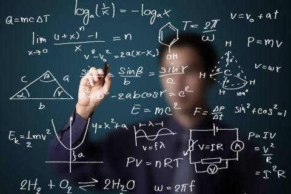

Matemáticas - El Encanto Oculto de los Números
A menudo, las matemáticas son vistas como una asignatura fría y distante, un conjunto de reglas y fórmulas a memorizar. Sin embargo, para aquellos que logran descubrir su belleza intrínseca, las matemáticas se transforman en un apasionante viaje de descubrimiento y creación.
Como profesor de matemáticas, he tenido el privilegio de presenciar cómo el asombro se enciende en los ojos de mis alumnos cuando comprenden un concepto complejo o resuelven un problema desafiante. Ese momento de "¡Eureka!" es la recompensa más gratificante de mi trabajo.
